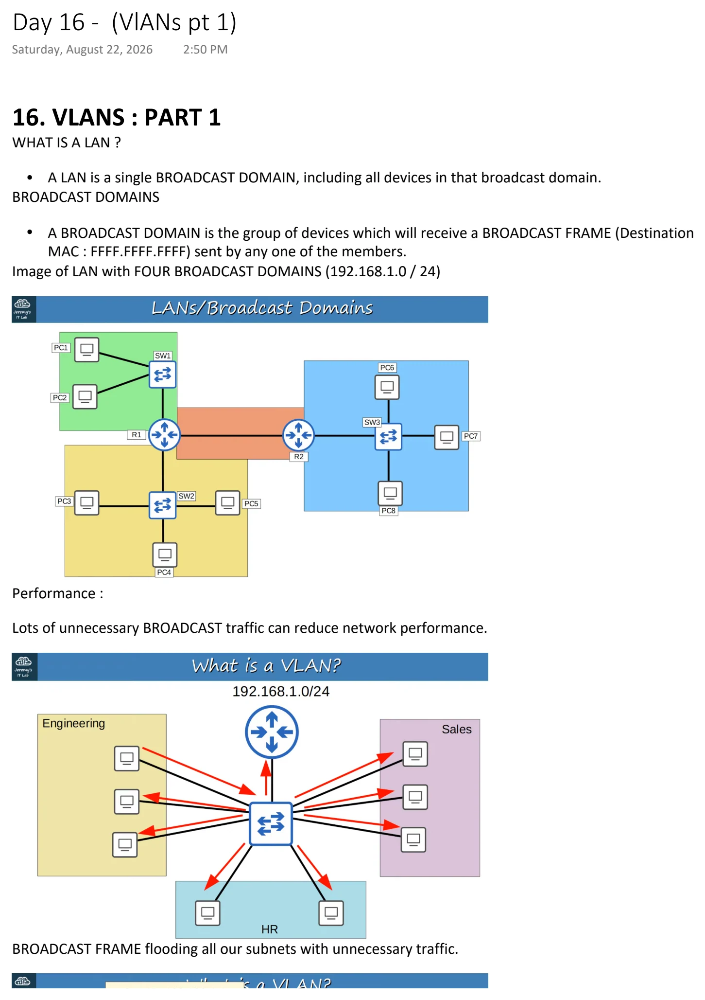
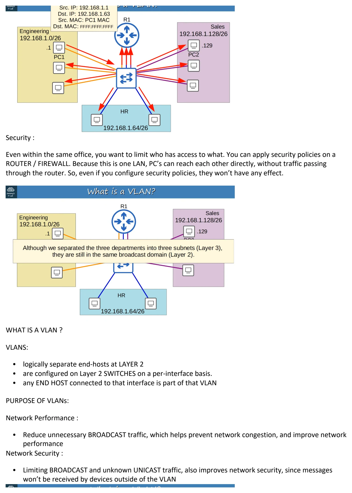
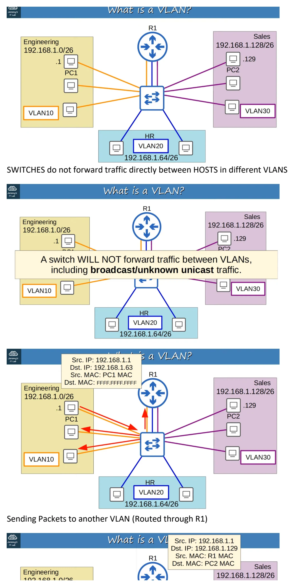
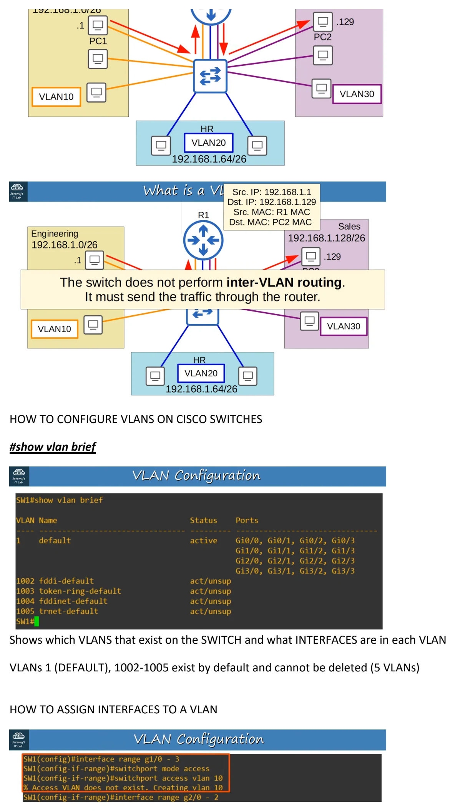
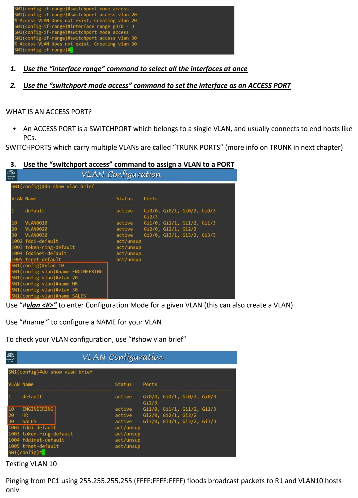
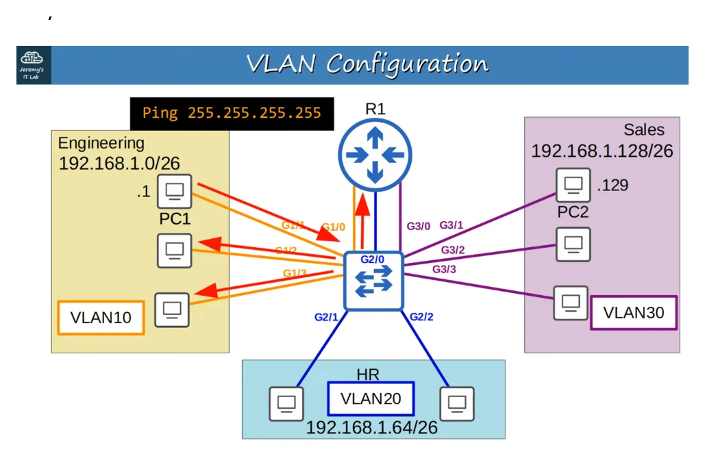

(VlANs pt 1)
Download original PDF





Text view — (VlANs pt 1)
Extracted from the original export. Diagrams and some formatting appear in the notes above.
Day 16 - (VlANs pt 1) Saturday, August 22, 2026 2:50 PM 16. VLANS : PART 1 WHAT IS A LAN ? • A LAN is a single BROADCAST DOMAIN, including all devices in that broadcast domain. BROADCAST DOMAINS • A BROADCAST DOMAIN is the group of devices which will receive a BROADCAST FRAME (Destination MAC : FFFF.FFFF.FFFF) sent by any one of the members. Image of LAN with FOUR BROADCAST DOMAINS (192.168.1.0 / 24) Performance : Lots of unnecessary BROADCAST traffic can reduce network performance. BROADCAST FRAME flooding all our subnets with unnecessary traffic. Security : Even within the same office, you want to limit who has access to what. You can apply security policies on a ROUTER / FIREWALL. Because this is one LAN, PC’s can reach each other directly, without traffic passing through the router. So, even if you configure security policies, they won’t have any effect. WHAT IS A VLAN ? VLANS: • logically separate end-hosts at LAYER 2 • are configured on Layer 2 SWITCHES on a per-interface basis. • any END HOST connected to that interface is part of that VLAN PURPOSE OF VLANs: Network Performance : • Reduce unnecessary BROADCAST traffic, which helps prevent network congestion, and improve network performance Network Security : • Limiting BROADCAST and unknown UNICAST traffic, also improves network security, since messages won’t be received by devices outside of the VLAN SWITCHES do not forward traffic directly between HOSTS in different VLANS Sending Packets to another VLAN (Routed through R1) HOW TO CONFIGURE VLANS ON CISCO SWITCHES #show vlan brief Shows which VLANS that exist on the SWITCH and what INTERFACES are in each VLAN VLANs 1 (DEFAULT), 1002-1005 exist by default and cannot be deleted (5 VLANs) HOW TO ASSIGN INTERFACES TO A VLAN 1. Use the “interface range” command to select all the interfaces at once 2. Use the “switchport mode access” command to set the interface as an ACCESS PORT WHAT IS AN ACCESS PORT? • An ACCESS PORT is a SWITCHPORT which belongs to a single VLAN, and usually connects to end hosts like PCs. SWITCHPORTS which carry multiple VLANs are called “TRUNK PORTS” (more info on TRUNK in next chapter) 3. Use the “switchport access” command to assign a VLAN to a PORT Use “#vlan <#>” to enter Configuration Mode for a given VLAN (this can also create a VLAN) Use “#name ” to configure a NAME for your VLAN To check your VLAN configuration, use “#show vlan brief” Testing VLAN 10 Pinging from PC1 using 255.255.255.255 (FFFF:FFFF:FFFF) floods broadcast packets to R1 and VLAN10 hosts only Day 16 - (VlANs pt 1) Saturday, August 22, 2026 2:50 PM 16. VLANS : PART 1 WHAT IS A LAN ? • A LAN is a single BROADCAST DOMAIN, including all devices in that broadcast domain. BROADCAST DOMAINS • A BROADCAST DOMAIN is the group of devices which will receive a BROADCAST FRAME (Destination MAC : FFFF.FFFF.FFFF) sent by any one of the members. Image of LAN with FOUR BROADCAST DOMAINS (192.168.1.0 / 24) Performance : Lots of unnecessary BROADCAST traffic can reduce network performance. BROADCAST FRAME flooding all our subnets with unnecessary traffic. Security : Even within the same office, you want to limit who has access to what. You can apply security policies on a ROUTER / FIREWALL. Because this is one LAN, PC’s can reach each other directly, without traffic passing through the router. So, even if you configure security policies, they won’t have any effect. WHAT IS A VLAN ? VLANS: • logically separate end-hosts at LAYER 2 • are configured on Layer 2 SWITCHES on a per-interface basis. • any END HOST connected to that interface is part of that VLAN PURPOSE OF VLANs: Network Performance : • Reduce unnecessary BROADCAST traffic, which helps prevent network congestion, and improve network performance Network Security : • Limiting BROADCAST and unknown UNICAST traffic, also improves network security, since messages won’t be received by devices outside of the VLAN SWITCHES do not forward traffic directly between HOSTS in different VLANS Sending Packets to another VLAN (Routed through R1) HOW TO CONFIGURE VLANS ON CISCO SWITCHES #show vlan brief Shows which VLANS that exist on the SWITCH and what INTERFACES are in each VLAN VLANs 1 (DEFAULT), 1002-1005 exist by default and cannot be deleted (5 VLANs) HOW TO ASSIGN INTERFACES TO A VLAN 1. Use the “interface range” command to select all the interfaces at once 2. Use the “switchport mode access” command to set the interface as an ACCESS PORT WHAT IS AN ACCESS PORT? • An ACCESS PORT is a SWITCHPORT which belongs to a single VLAN, and usually connects to end hosts like PCs. SWITCHPORTS which carry multiple VLANs are called “TRUNK PORTS” (more info on TRUNK in next chapter) 3. Use the “switchport access” command to assign a VLAN to a PORT Use “#vlan <#>” to enter Configuration Mode for a given VLAN (this can also create a VLAN) Use “#name ” to configure a NAME for your VLAN To check your VLAN configuration, use “#show vlan brief” Testing VLAN 10 Pinging from PC1 using 255.255.255.255 (FFFF:FFFF:FFFF) floods broadcast packets to R1 and VLAN10 hosts only Day 16 - (VlANs pt 1) Saturday, August 22, 2026 2:50 PM 16. VLANS : PART 1 WHAT IS A LAN ? • A LAN is a single BROADCAST DOMAIN, including all devices in that broadcast domain. BROADCAST DOMAINS • A BROADCAST DOMAIN is the group of devices which will receive a BROADCAST FRAME (Destination MAC : FFFF.FFFF.FFFF) sent by any one of the members. Image of LAN with FOUR BROADCAST DOMAINS (192.168.1.0 / 24) Performance : Lots of unnecessary BROADCAST traffic can reduce network performance. BROADCAST FRAME flooding all our subnets with unnecessary traffic. Security : Even within the same office, you want to limit who has access to what. You can apply security policies on a ROUTER / FIREWALL. Because this is one LAN, PC’s can reach each other directly, without traffic passing through the router. So, even if you configure security policies, they won’t have any effect. WHAT IS A VLAN ? VLANS: • logically separate end-hosts at LAYER 2 • are configured on Layer 2 SWITCHES on a per-interface basis. • any END HOST connected to that interface is part of that VLAN PURPOSE OF VLANs: Network Performance : • Reduce unnecessary BROADCAST traffic, which helps prevent network congestion, and improve network performance Network Security : • Limiting BROADCAST and unknown UNICAST traffic, also improves network security, since messages won’t be received by devices outside of the VLAN SWITCHES do not forward traffic directly between HOSTS in different VLANS Sending Packets to another VLAN (Routed through R1) HOW TO CONFIGURE VLANS ON CISCO SWITCHES #show vlan brief Shows which VLANS that exist on the SWITCH and what INTERFACES are in each VLAN VLANs 1 (DEFAULT), 1002-1005 exist by default and cannot be deleted (5 VLANs) HOW TO ASSIGN INTERFACES TO A VLAN 1. Use the “interface range” command to select all the interfaces at once 2. Use the “switchport mode access” command to set the interface as an ACCESS PORT WHAT IS AN ACCESS PORT? • An ACCESS PORT is a SWITCHPORT which belongs to a single VLAN, and usually connects to end hosts like PCs. SWITCHPORTS which carry multiple VLANs are called “TRUNK PORTS” (more info on TRUNK in next chapter) 3. Use the “switchport access” command to assign a VLAN to a PORT Use “#vlan <#>” to enter Configuration Mode for a given VLAN (this can also create a VLAN) Use “#name ” to configure a NAME for your VLAN To check your VLAN configuration, use “#show vlan brief” Testing VLAN 10 Pinging from PC1 using 255.255.255.255 (FFFF:FFFF:FFFF) floods broadcast packets to R1 and VLAN10 hosts only Day 16 - (VlANs pt 1) Saturday, August 22, 2026 2:50 PM 16. VLANS : PART 1 WHAT IS A LAN ? • A LAN is a single BROADCAST DOMAIN, including all devices in that broadcast domain. BROADCAST DOMAINS • A BROADCAST DOMAIN is the group of devices which will receive a BROADCAST FRAME (Destination MAC : FFFF.FFFF.FFFF) sent by any one of the members. Image of LAN with FOUR BROADCAST DOMAINS (192.168.1.0 / 24) Performance : Lots of unnecessary BROADCAST traffic can reduce network performance. BROADCAST FRAME flooding all our subnets with unnecessary traffic. Security : Even within the same office, you want to limit who has access to what. You can apply security policies on a ROUTER / FIREWALL. Because this is one LAN, PC’s can reach each other directly, without traffic passing through the router. So, even if you configure security policies, they won’t have any effect. WHAT IS A VLAN ? VLANS: • logically separate end-hosts at LAYER 2 • are configured on Layer 2 SWITCHES on a per-interface basis. • any END HOST connected to that interface is part of that VLAN PURPOSE OF VLANs: Network Performance : • Reduce unnecessary BROADCAST traffic, which helps prevent network congestion, and improve network performance Network Security : • Limiting BROADCAST and unknown UNICAST traffic, also improves network security, since messages won’t be received by devices outside of the VLAN SWITCHES do not forward traffic directly between HOSTS in different VLANS Sending Packets to another VLAN (Routed through R1) HOW TO CONFIGURE VLANS ON CISCO SWITCHES #show vlan brief Shows which VLANS that exist on the SWITCH and what INTERFACES are in each VLAN VLANs 1 (DEFAULT), 1002-1005 exist by default and cannot be deleted (5 VLANs) HOW TO ASSIGN INTERFACES TO A VLAN 1. Use the “interface range” command to select all the interfaces at once 2. Use the “switchport mode access” command to set the interface as an ACCESS PORT WHAT IS AN ACCESS PORT? • An ACCESS PORT is a SWITCHPORT which belongs to a single VLAN, and usually connects to end hosts like PCs. SWITCHPORTS which carry multiple VLANs are called “TRUNK PORTS” (more info on TRUNK in next chapter) 3. Use the “switchport access” command to assign a VLAN to a PORT Use “#vlan <#>” to enter Configuration Mode for a given VLAN (this can also create a VLAN) Use “#name ” to configure a NAME for your VLAN To check your VLAN configuration, use “#show vlan brief” Testing VLAN 10 Pinging from PC1 using 255.255.255.255 (FFFF:FFFF:FFFF) floods broadcast packets to R1 and VLAN10 hosts only Day 16 - (VlANs pt 1) Saturday, August 22, 2026 2:50 PM 16. VLANS : PART 1 WHAT IS A LAN ? • A LAN is a single BROADCAST DOMAIN, including all devices in that broadcast domain. BROADCAST DOMAINS • A BROADCAST DOMAIN is the group of devices which will receive a BROADCAST FRAME (Destination MAC : FFFF.FFFF.FFFF) sent by any one of the members. Image of LAN with FOUR BROADCAST DOMAINS (192.168.1.0 / 24) Performance : Lots of unnecessary BROADCAST traffic can reduce network performance. BROADCAST FRAME flooding all our subnets with unnecessary traffic. Security : Even within the same office, you want to limit who has access to what. You can apply security policies on a ROUTER / FIREWALL. Because this is one LAN, PC’s can reach each other directly, without traffic passing through the router. So, even if you configure security policies, they won’t have any effect. WHAT IS A VLAN ? VLANS: • logically separate end-hosts at LAYER 2 • are configured on Layer 2 SWITCHES on a per-interface basis. • any END HOST connected to that interface is part of that VLAN PURPOSE OF VLANs: Network Performance : • Reduce unnecessary BROADCAST traffic, which helps prevent network congestion, and improve network performance Network Security : • Limiting BROADCAST and unknown UNICAST traffic, also improves network security, since messages won’t be received by devices outside of the VLAN SWITCHES do not forward traffic directly between HOSTS in different VLANS Sending Packets to another VLAN (Routed through R1) HOW TO CONFIGURE VLANS ON CISCO SWITCHES #show vlan brief Shows which VLANS that exist on the SWITCH and what INTERFACES are in each VLAN VLANs 1 (DEFAULT), 1002-1005 exist by default and cannot be deleted (5 VLANs) HOW TO ASSIGN INTERFACES TO A VLAN 1. Use the “interface range” command to select all the interfaces at once 2. Use the “switchport mode access” command to set the interface as an ACCESS PORT WHAT IS AN ACCESS PORT? • An ACCESS PORT is a SWITCHPORT which belongs to a single VLAN, and usually connects to end hosts like PCs. SWITCHPORTS which carry multiple VLANs are called “TRUNK PORTS” (more info on TRUNK in next chapter) 3. Use the “switchport access” command to assign a VLAN to a PORT Use “#vlan <#>” to enter Configuration Mode for a given VLAN (this can also create a VLAN) Use “#name ” to configure a NAME for your VLAN To check your VLAN configuration, use “#show vlan brief” Testing VLAN 10 Pinging from PC1 using 255.255.255.255 (FFFF:FFFF:FFFF) floods broadcast packets to R1 and VLAN10 hosts only Day 16 - (VlANs pt 1) Saturday, August 22, 2026 2:50 PM 16. VLANS : PART 1 WHAT IS A LAN ? • A LAN is a single BROADCAST DOMAIN, including all devices in that broadcast domain. BROADCAST DOMAINS • A BROADCAST DOMAIN is the group of devices which will receive a BROADCAST FRAME (Destination MAC : FFFF.FFFF.FFFF) sent by any one of the members. Image of LAN with FOUR BROADCAST DOMAINS (192.168.1.0 / 24) Performance : Lots of unnecessary BROADCAST traffic can reduce network performance. BROADCAST FRAME flooding all our subnets with unnecessary traffic. Security : Even within the same office, you want to limit who has access to what. You can apply security policies on a ROUTER / FIREWALL. Because this is one LAN, PC’s can reach each other directly, without traffic passing through the router. So, even if you configure security policies, they won’t have any effect. WHAT IS A VLAN ? VLANS: • logically separate end-hosts at LAYER 2 • are configured on Layer 2 SWITCHES on a per-interface basis. • any END HOST connected to that interface is part of that VLAN PURPOSE OF VLANs: Network Performance : • Reduce unnecessary BROADCAST traffic, which helps prevent network congestion, and improve network performance Network Security : • Limiting BROADCAST and unknown UNICAST traffic, also improves network security, since messages won’t be received by devices outside of the VLAN SWITCHES do not forward traffic directly between HOSTS in different VLANS Sending Packets to another VLAN (Routed through R1) HOW TO CONFIGURE VLANS ON CISCO SWITCHES #show vlan brief Shows which VLANS that exist on the SWITCH and what INTERFACES are in each VLAN VLANs 1 (DEFAULT), 1002-1005 exist by default and cannot be deleted (5 VLANs) HOW TO ASSIGN INTERFACES TO A VLAN 1. Use the “interface range” command to select all the interfaces at once 2. Use the “switchport mode access” command to set the interface as an ACCESS PORT WHAT IS AN ACCESS PORT? • An ACCESS PORT is a SWITCHPORT which belongs to a single VLAN, and usually connects to end hosts like PCs. SWITCHPORTS which carry multiple VLANs are called “TRUNK PORTS” (more info on TRUNK in next chapter) 3. Use the “switchport access” command to assign a VLAN to a PORT Use “#vlan <#>” to enter Configuration Mode for a given VLAN (this can also create a VLAN) Use “#name ” to configure a NAME for your VLAN To check your VLAN configuration, use “#show vlan brief” Testing VLAN 10 Pinging from PC1 using 255.255.255.255 (FFFF:FFFF:FFFF) floods broadcast packets to R1 and VLAN10 hosts only